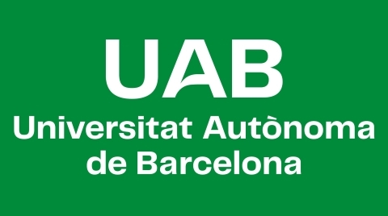

Universitat Autónoma de Barcelona (Barcelona, Spain)
UAB's Logo
Description: University Studies.
Courses: Currently pursuing a double degree program at UAB, specializing in Electronics as part of my Electrical Engineering studies. Throughout my studies, I am acquiring a solid foundation in various aspects of electronics, including circuit design, digital systems, peripherals and signal processing. The double degree program at UAB provides me with a well-rounded education in Electronic Engineering, combining theoretical knowledge with hands-on experience. In addition, I'm currently pursuing a double degree program at UAB, specializing in the Computation branch as part of my Computer Science studies. This program offers me a solid foundation in Computer Science while allowing me to focus my studies on the specific area of computation. Through this specialized track, I am gaining in-depth knowledge and practical skills in various computational concepts and techniques as I am actively engaged in coursework that covers a wide range of topics, including algorithm design, data structures, programming languages, and software development